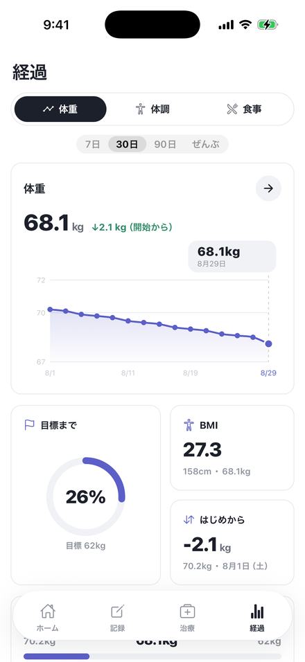
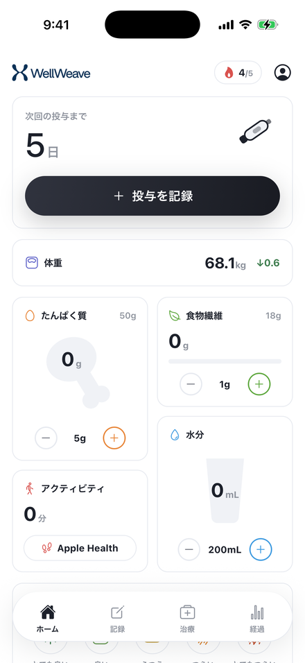
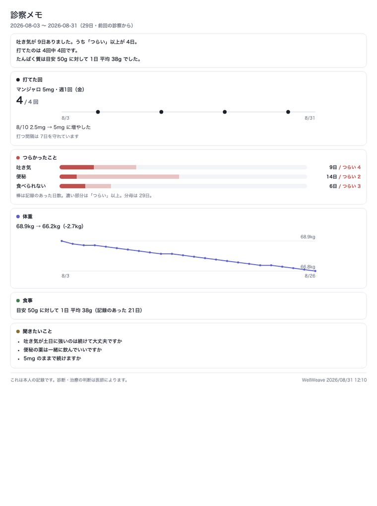
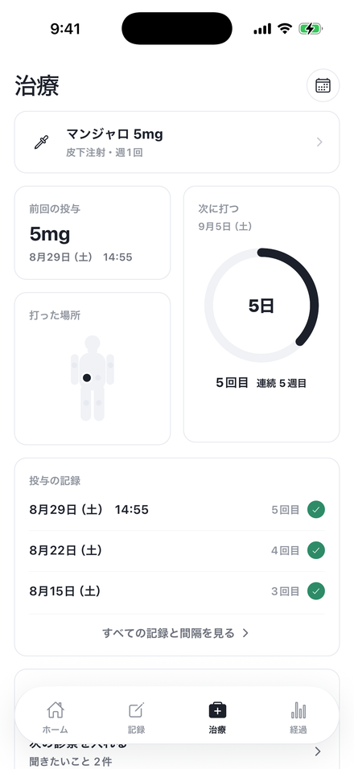

経過
体重の線と、目標までの進み方。着く見込みの日はあなたが決めたペースといまの体重の割り算で、薬がこれだけ減らすという意味ではありません。そう画面にも書いてあります。

そう言えるのは、記録があるからです。
打つ・食べる・つらさ・体重を、1回30秒。

効きが切れるのは4日目だという人も、6日目まで持つという人もいます。 木曜から食欲が戻る人も、土日だけがつらい人もいます。 同じ薬でも、人によって違います。 だから多くの人が、自分で数えています。
WellWeave は、打った日と、その後の体調・食事・体重を同じところに置きます。 症状マップ（日 × 症状 × つよさ）に並ぶので、 「金曜に打つと、土日がつらい」が形で見えます。 平均でも推定でもなく、あなたの記録です。
打つ日を決める
つらい波が土日に来るなら、打つ曜日をずらす手があります。 記録があると、その判断を医師に相談できます。
増やした週を、前の週と並べる
2.5mg から 5mg へ。ここでやめる人がいちばん多い。 用量の変更は記録に残り、前後を並べて見られます。
打った場所と痛み
おなか・太もも・腕。場所は前回の値が入っていて、 痛みも一緒に残せます。次はどこに打つかが決まります。
「今朝お腹が空かないのは、薬なのか、昨日食べ過ぎたからなのか」—— 1日の記録だけでは、切り分けられません。 何周期か重ねて、はじめて見えてきます。 だから WellWeave は、消さずに貯めます。
体重が動かない週も同じです。 止まっているように見える2週間に、打てた回・記録した日数・食べられた量は積み上がっています。 WellWeave はそれを数えますが、励ましません。 「先週より頑張りましょう」とは言いません。
医師の説明と、自分の体感が食い違うことがあります。そのとき手元にあるのが、自分の記録です。
体重の線と、目標までの進み方。着く見込みの日はあなたが決めたペースといまの体重の割り算で、薬がこれだけ減らすという意味ではありません。そう画面にも書いてあります。

打てた回・つらかったこと・体重・食事・聞きたいことを1枚に。「変わりないですか」「はい」で5分が終わって、吐き気を言いそびれる——をやめるための紙です。

「摂ったほうがいい」はもう知っている人がほとんどです。足りないのは今日いくつ摂れたかを数える手段のほう。目標は日本人の食事摂取基準2025年版から、年齢と性別で引きます（36歳女性なら50g）。海外アプリの既定値は95g。同じ「目標」で2倍ちがいます。
つらい日に献立は浮かびません。「これなら食べられた」に、過去に自分が食べられたものが貯まります。サラダチキン・ゼリー飲料・おかゆ・みそ汁——日本食品標準成分表から引くので、そのまま検索できます。
いちばん話されているのは、副作用ではなくやめた後です。WellWeave は、やめた日からの日数と、食欲が戻った日、体重の動きを続けて記録します。やめても閉じないアプリです。
金曜の夜も、

つらい土曜も。
会社にも家族にも言っていない治療のことが、どこかのサーバーに送られていくのは気持ちのいいものではありません。 WellWeave は記録の送信先を持っていません。
WellWeave は記録の道具です。医療行為・診断・治療は行いません。用量の提案もしません。次の4つは、このアプリのどこにも書いてありません。
たんぱく質を摂れば筋肉が保てる
食物繊維で便秘が治る
水を飲めば副作用が軽くなる
記録すると痩せる
GLP-1（マンジャロ・オゼンピック・リベルサスなど）の治療を受けている本人が、打った日・食べたもの・体調・体重を記録するアプリです。たまった記録は、診察前のレポート1枚にまとまります。
こちらから予測は出しません。ただ、打った日と、その後の体調・食事・体重が同じところに並ぶので、あなたの記録から波が見えるようになります。血中濃度の推定は行いません。
ホームからだと、食事と水分は＋を1回押すだけ、体調は天気を選んで保存で2回、投与は2回です。つらい日に長い画面を出さないことを設計の前提にしています。
使えます。やめた日を記録すると、そこからの日数・食欲が戻った日・体重の動きを続けて見られます。やめたら閉じるアプリにはしていません。
どこへも行きません。記録は端末の中のデータベースに保存され、送信先を持っていません。アカウント登録もありません。
設定で、画面上の販売名を「おくすり」に置き換えられます。量は伏せません。診察レポートだけは実名で出ます。
体重と歩数を読み込みます。WellWeave から書き込むことはありません。手で入れた記録があれば、そちらを残します。
毎日の記録と安全に関わる表示は、すべて無料です。90日より前の経過と、診察前レポートの共有・PDF書き出しが有料（WellWeave Pro）です。最初の3日間は無料でお試しいただけます。
いいえ。WellWeave は医療行為・診断・治療を行いません。用量の変更も提案しません。体調の判断は必ず医師にご相談ください。